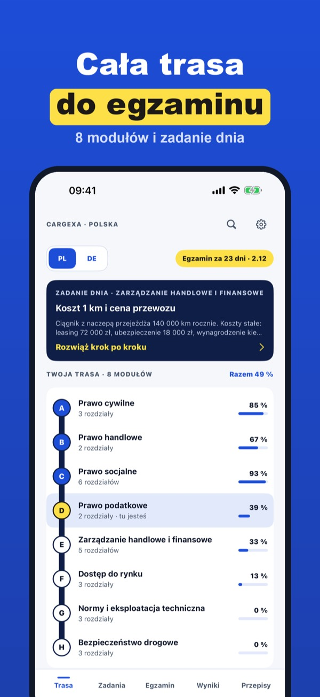
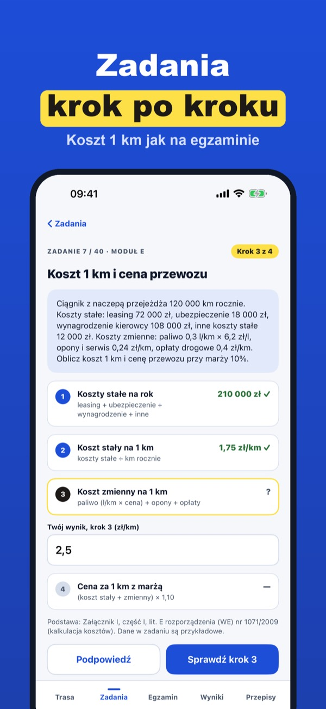
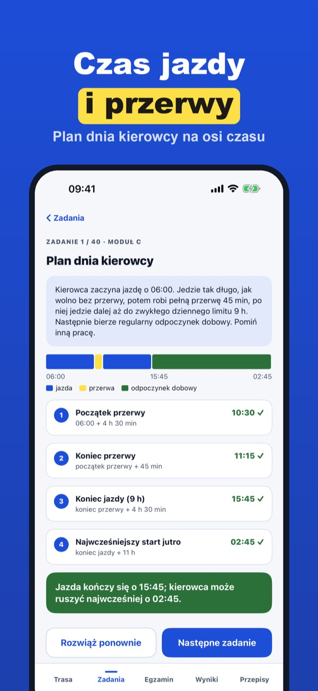
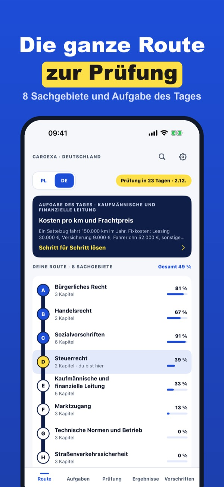
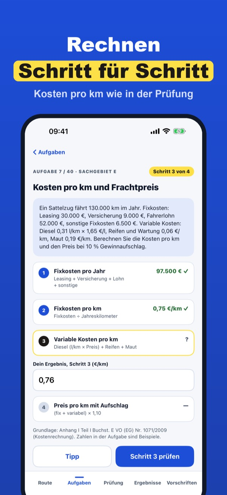
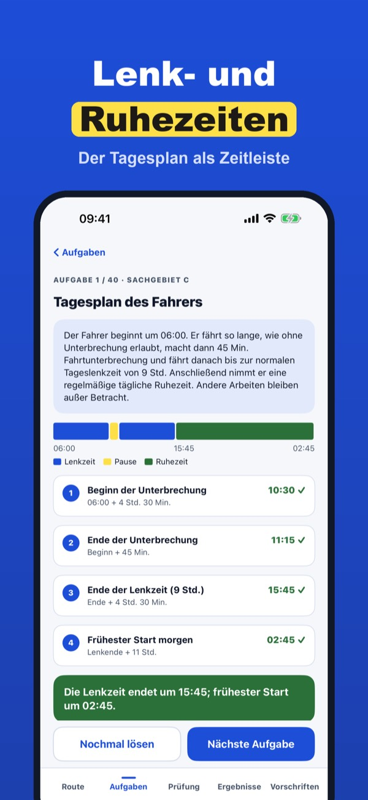

Certyfikat kompetencji CKZ
Pytania z 8 modułów, zadania obliczeniowe krok po kroku i egzamin próbny w formacie polskim. Czas jazdy, koszty, CMR – także bez internetu.



Chcesz prowadzić firmę transportową albo zostać zarządzającym transportem? Cargexa przeprowadzi Cię przez wszystkie 8 modułów egzaminu na certyfikat kompetencji zawodowych: pytania z podstawą prawną przy każdej odpowiedzi, zadania obliczeniowe rozwiązywane krok po kroku i egzamin próbny w formacie Twojego kraju. Na telefonie, także bez internetu.
Bez zakupu: moduł prawo socjalne, 20 pytań i jedno zadanie obliczeniowe. Cargexa Plus to zakup jednorazowy: wszystkie 8 modułów, 185 pytań dla Polski i 187 dla Niemiec, 40 zadań, egzamin próbny, podsumowanie PDF, Polska i Niemcy. Bez subskrypcji.
Pytania i zadania Cargexa to nasze własne opracowanie na podstawie publicznych przepisów UE i krajowych; nie pochodzą z egzaminu państwowego. Cargexa nie jest aplikacją instytucji egzaminującej. Wiążące są aktualne przepisy i regulamin egzaminu.
Terms of Use (EULA): https://www.apple.com/legal/internet-services/itunes/dev/stdeula/
Privacy: https://apps.baytech.nl/cargexa-eu/
Güterkraftverkehr üben
Fragen aus allen 8 Sachgebieten, Rechenaufgaben Schritt für Schritt und eine Probeprüfung mit Zeit. Lenkzeiten, Kosten, CMR – auch offline.



Du willst ein Transportunternehmen führen oder Verkehrsleiter werden? Cargexa begleitet dich durch alle 8 Sachgebiete der Fachkundeprüfung im Güterkraftverkehr: Fragen mit Rechtsgrundlage zu jeder Antwort, Rechenaufgaben und Fallstudien Schritt für Schritt und eine Probeprüfung angelehnt an das deutsche Format. Auf dem iPhone, auch ohne Internet.
Ohne Kauf: Sachgebiet Sozialvorschriften, 20 Fragen und eine Rechenaufgabe. Cargexa Plus ist ein Einmalkauf: alle 8 Sachgebiete, 187 Fragen für Deutschland und 185 für Polen, 40 Aufgaben, Probeprüfung, PDF-Zusammenfassung, Deutschland und Polen. Kein Abo.
Cargexa enthält eigene Übungsfragen und Aufgaben, geschrieben nach öffentlichen EU- und deutschen Vorschriften – keine Original-Prüfungsfragen. Cargexa gehört zu keiner Kammer oder Prüfungsstelle. Maßgeblich sind die geltenden Vorschriften und die Prüfungsordnung deiner Kammer.
Terms of Use (EULA): https://www.apple.com/legal/internet-services/itunes/dev/stdeula/
Privacy: https://apps.baytech.nl/cargexa-eu/